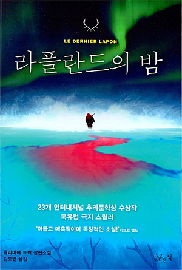

브랏센은 사람들이 자기를 싫어한다는 것을 알았다. 그러나 왜들 그러는지는 도통 이해할 수 없었다. 클레메트는 그 이유를 알았다. 브랏센은 한마디로 수준 미달의 사내였다. 냉혹하고 오만하고 비열하고 저속하며 편향적인 사고로 똘똘 뭉친 인종차별주의자였다. 클레메트는 그 외에도 더 많은 이유를 댈 수 있었다. 그러나 브랏센은 스스로를 직설적이고 솔직한 사람이라고 여겼다. 너무 솔직해서 탈이라고 생각하기도 했지만 어쨌든 자신은 유능했고, 필요하다면 과감한 결정도 단칼에 내릴 줄 알았다.
------------------
1. 만국 공통이구나 싶어서 빵터짐 (↑)
2. 감초 (Liquorice) 스위츠 이야기가 자주 나와서 인상적
아이슬란드 갔을때 감초 맛 커피 / 스위츠를 많이 봤는데 추운나라에 무슨 연관이 있는거지?
처음 먹어본건 영국살때 옛날 스타일 과자, 사탕 파는 가게에서 M군이 넘 반가워 하길래 사서 먹어봤었음;;
엔간해서 음식 가리지 않는데 이건 정말 뭔맛으로 먹는지 모르겠다 리스트중 하나 ㅋㅋㅋㅋ
3. 백야/극야 너무 힘들거 같다..........
4. 북유럽/아이슬란드 다시 가고싶다 ㅜㅜ ㅜㅜ
5. 그리고 이 책을 다 읽은 후 xsfm 북극여우 님의 '올로프 팔메 암살 사건의 미스테리' 다시 들었다.